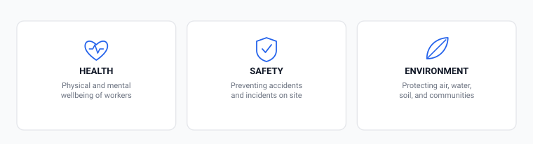
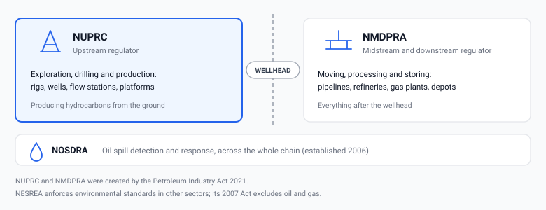
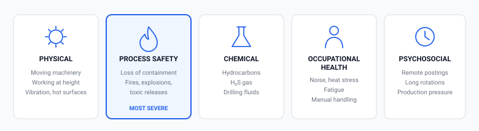
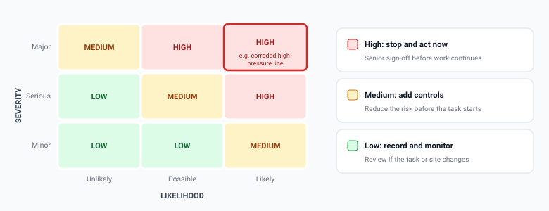
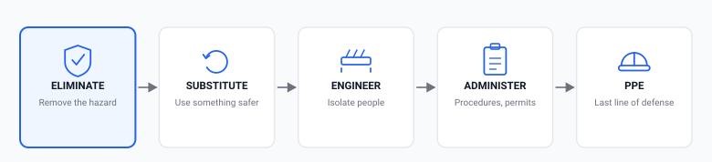

Unit 1 · about 5 minutes
Welcome to Introduction to HSE for Oil & Gas
Health, Safety and Environment (HSE) is the part of the oil and gas industry that makes sure everyone goes home at the end of a shift, and that the land, water and communities around a site are protected. Every rig, flow station, pipeline and depot needs people who understand it.
This short course gives you a solid first look at HSE in Nigeria's oil and gas sector. It is written for graduates and corps members. You don't need any background in engineering or safety.
By the end you will be able to
- Explain what HSE covers, and the difference between a hazard, a risk, an incident and a near-miss.
- Name the main Nigerian bodies that oversee HSE in oil and gas, and which part of the industry each one covers.
- Recognise the five main types of hazard found on an oil and gas site.
- Use a simple risk matrix and the hierarchy of controls to decide how to deal with a hazard.
How this course works
Allow about 1½ to 2 hours in total, including a practice scenario and the quiz. Keep a notebook nearby: each unit ends with a short "Think about it" question to help you remember what you've read.
This course works on a phone. If you lose your connection, come back later and carry on from where you stopped.
Unit 2 · about 15 minutes
What HSE means
HSE stands for Health, Safety and Environment. In oil and gas it isn't a policy file in an office. It decides whether a shift ends normally or doesn't.
The three parts of HSE
Health is the physical and mental wellbeing of workers. It includes long-term harm such as hearing loss from noise or illness from breathing in chemicals, not just injuries you can see.
Safety is preventing accidents that could injure or kill someone, from a slip on an oily walkway to a fire or explosion at a processing plant.
Environment is preventing harm to the air, water, soil and communities around a site, and responding properly when something goes wrong.

On an oil and gas site the three are tied together. A gas leak is a safety hazard (it could ignite), a health hazard (people could breathe it in) and an environmental hazard (it pollutes the air), all at once. That is why one HSE team usually looks after all three.
Four words you will use every day
- Hazard
- Anything with the potential to cause harm: a high-pressure line, a chemical drum, a ladder, a long night shift. A hazard is real even if it hasn't hurt anyone yet.
- Risk
- How likely it is that a hazard will actually cause harm, combined with how bad that harm would be. Two hazards can carry very different risks.
- Incident
- Any unplanned event that caused, or could have caused, injury, illness, damage or pollution.
- Near-miss
- An incident where nobody was hurt and nothing was damaged, but all the conditions for a real incident were there. A dropped spanner that lands a metre from someone is a near-miss.
Treat near-misses as seriously as real incidents. A near-miss is free information about how the next real incident is likely to happen. Sites that report and learn from near-misses have fewer serious incidents.
Why oil and gas runs on formal HSE systems
Most industries deal with one or two serious hazards. Oil and gas combines many in one place: flammable and explosive materials, high-pressure equipment, heavy rotating machinery, work at height, confined spaces, long road journeys, and sites that can be hours from a hospital.
"Common sense" isn't enough when thousands of workers, many contractors, day and night shifts and years of operation are involved. Everyone's common sense is slightly different. A formal HSE system, with written procedures, permits, training and checks, makes sure the same safe way of working happens every time, whoever is on shift.
Think of a place you know: a filling station, a market, a hostel kitchen. Write down one hazard there, and say whether you think its risk is high or low, and why.
Quick check
A worker trips on a hose but grabs a rail and isn't hurt. What is this?
Which statement about risk is correct?
Unit 3 · about 20 minutes
HSE in Nigeria's oil and gas industry
HSE in Nigeria is shaped by where the industry operates and by the regulators who watch over it.
Where the industry operates
Much of Nigeria's oil and gas production takes place in the Niger Delta. It is a network of creeks, swamps and farmland, with towns and villages living close to pipelines, flow stations and terminals. Offshore platforms and deepwater fields add their own challenges, such as helicopter and boat transport and working far from help.
Because communities are so close, an oil spill here isn't only a cost to the company. It can damage the fishing grounds and farmland that families depend on. That is a big reason why environmental protection is treated as seriously as personal safety in this sector.
Who regulates HSE
The Petroleum Industry Act 2021 reorganised how the industry is regulated. It created two regulators that split the industry at the wellhead:
- NUPRC (Nigerian Upstream Petroleum Regulatory Commission) oversees the upstream: exploration, drilling and production. If a facility is getting oil or gas out of the ground, such as a rig, a well or a flow station, NUPRC is its regulator.
- NMDPRA (Nigerian Midstream and Downstream Petroleum Regulatory Authority) oversees the midstream and downstream: pipelines, refineries, gas processing plants, and storage and distribution depots. If a facility is moving, processing or storing oil and gas after it leaves the wellhead, NMDPRA is its regulator.
Two other bodies matter:
- NOSDRA (National Oil Spill Detection and Response Agency), established in 2006, is responsible for detecting and responding to oil spills anywhere in Nigeria. It coordinates the national oil spill contingency plan.
- NESREA (National Environmental Standards and Regulations Enforcement Agency), established in 2007, enforces environmental standards across most sectors of the economy. Its Act excludes the oil and gas sector, where environmental compliance sits mainly with the petroleum regulators and NOSDRA. You may meet NESREA if you work for a contractor that also serves other industries.

Other government bodies also play a part. The Federal Ministry of Labour and Employment covers general workplace safety. The Federal Ministry of Environment requires environmental impact assessments for major projects. NIMASA regulates safety at sea for vessels. You don't need to memorise them all now; the full course covers the legal framework in detail.
What matters is this: a company's HSE performance isn't a private matter. It is monitored, reported and enforced, and serious incidents must be reported to the regulator.
Why HSE skills get people hired
Every site, rig and facility needs HSE cover every day, whether oil prices are high or low. International oil companies, Nigerian operators and the many service companies that support them all employ HSE staff. Typical entry routes include:
- HSE assistant or HSE officer on a site or project
- Graduate trainee in an operator's or contractor's HSE department
- Permit-to-work coordinator or safety supervisor on a project
- Environmental officer or field monitor
Employers want to see that you understand how HSE works in practice and can think in a structured way about risk. Units 4 and 5 start building exactly that.
A tanker loads petrol at a depot in Warri and drives it to a filling station. Which regulator oversees the depot? Write down your answer and one reason.
Quick check
Which regulator oversees a gas processing plant?
Which agency is responsible for detecting and responding to oil spills?
Unit 4 · about 20 minutes
Hazards on an oil and gas site
You can't control a hazard you haven't spotted. HSE professionals learn to scan a site or a task and sort what they see into types, because each type needs a different kind of response.

1. Physical hazards
These are often the easiest to see: moving and rotating machinery, work at height on rigs and tanks, vibration, hot surfaces near flares and engines, and vehicles moving around a yard. They cause many day-to-day injuries, but they aren't usually the cause of the biggest disasters.
2. Process safety hazards
Process safety is about keeping hazardous materials inside the pipes, vessels and tanks where they belong. When containment is lost, through a corroded pipe, a valve that fails, or a vessel pushed past its pressure limit, the result can be a fire, an explosion or a toxic release. Most major disasters in the industry trace back to a process safety failure, which is why companies give it special attention.
3. Chemical hazards
Crude oil, gas and refined products are flammable, and many are harmful to breathe in or touch. Drilling fluids and produced water contain chemicals that need careful handling.
One chemical deserves special mention: hydrogen sulphide (H₂S). It is found in some oil and gas fields and smells of rotten eggs at low levels. At high concentrations it quickly deadens your sense of smell, so the danger can seem to disappear just as it becomes deadly. That is why sites where H₂S may be present rely on gas detectors and training, never on smell.
4. Occupational health hazards
These harm people slowly, over weeks and years, so they are easy to ignore:
- Noise from compressors and generators damages hearing long before it feels painful.
- Heat stress is a daily risk in Nigeria's climate, made worse by flame-resistant coveralls and heavy work. Dizziness, headaches and confusion are warning signs, not just a bad day.
- Fatigue builds up over long shifts and rotations and is a known contributor to serious incidents.
- Manual handling of pipe sections, drums and sacks causes back and joint injuries.
5. Psychosocial hazards
Remote postings, weeks away from family, long rotations and pressure to keep production running all affect people's wellbeing and their decisions. A stressed, exhausted worker is more likely to take a shortcut. Good HSE systems take this seriously too.
Picture a crew changing a valve on a pipeline on a hot afternoon. List one hazard from at least three of the five types.
Quick check
A corroded pipe starts leaking gas. Which type of hazard is this mainly?
Why can't workers rely on smell to detect H₂S?
Unit 5 · about 20 minutes
Assessing and controlling risk
Spotting hazards is step one. Next you decide how serious each one is and what to do about it. In the industry this is called HIRA: Hazard Identification and Risk Assessment.
The HIRA steps
- Identify the hazards in the task or area.
- Decide who could be harmed and how: the crew, contractors, visitors, the community.
- Evaluate the risk: how likely is harm, and how severe would it be?
- Decide on controls to reduce the risk.
- Record and review the findings, and look at them again when anything changes.
Before a specific higher-risk job, crews often complete a Job Safety Analysis (JSA). It's the same thinking as HIRA, applied to one task at one moment: the job is broken into steps, and the hazards and controls for each step are written down and agreed before work starts.
The risk matrix
Most companies score risk on a matrix: likelihood along one side, severity along the other. Where a hazard lands tells you how urgently to act and who must approve the work. Company matrices are often 5 × 5; the 3 × 3 version below shows the idea.

The hierarchy of controls
Once you know how serious a risk is, you choose controls. HSE professionals work down a fixed order, starting with the most effective:

- Eliminate: remove the hazard completely. For example, inspect a tank with a camera so no one has to go inside.
- Substitute: swap it for something less hazardous, such as a less toxic cleaning chemical.
- Engineering controls: physically separate people from the hazard, such as guard rails, machine guards, ventilation or a bund around a tank.
- Administrative controls: procedures, permits to work, training, signs and rotas.
- PPE (personal protective equipment): hard hats, gloves, coveralls, ear defenders and respirators. PPE protects only the person wearing it, and only if it fits and is worn correctly.
New starters often answer every hazard with "wear PPE". In an interview, show that you work down the hierarchy: what can you eliminate or engineer out first? PPE handles whatever risk is left.
Stop Work Authority
On a well-run site every worker, not just supervisors, has Stop Work Authority: the right and the duty to stop a task straight away if it looks unsafe, without asking permission first. It only works if people trust they won't be punished for using it, which is why strong leaders thank people who stop the job.
Choose one hazard you listed in Unit 4. Where would it sit on the risk matrix? Write one control for it, starting as high up the hierarchy as you can.
Quick check
Which control is the most effective?
A new contractor thinks a lift looks unsafe, but the supervisor is busy. What should they do?
Unit 6 · about 15 minutes
Practice scenario: cleaning a petrol storage tank
You are an HSE trainee at a petroleum products depot near Warri. Tomorrow a contractor crew will open a large petrol storage tank and clean out the sludge at the bottom. The tank has been emptied of product. The forecast is hot and sunny. The crew's supervisor tells you they want to "get it done quickly".
Work through the four steps below. Your answers here don't count towards your score; they are practice for the final quiz and for real interviews.
Step 1: Which of these are real hazards for this job? Tick all that apply.
Step 2: Which regulator oversees this depot?
Step 3: What is the best first control for the vapour and bad air inside the tank?
Step 4: Halfway through the job, a portable gas alarm starts sounding inside the tank. The supervisor says it's probably faulty and to keep going. What should happen?
Confined space entry, gas testing and permits to work are covered properly on Day 4 of the full HSE Fundamentals course.
Unit 7 · about 15 minutes
Final quiz
15 questions on everything in this course. You need 70% (11 out of 15) to pass. If you don't pass the first time, review the units and try again.
Unit 8 · about 5 minutes
Your next step: the full HSE pathway
You've now covered the basics from the first two days of Paleon Training's full HSE Fundamentals course. Employers hiring for HSE roles want to see more than an introduction. They want proof that you can apply it.
What the full course adds
It is online and self-paced, works on a phone, and fits around your Place of Primary Assignment.
See the full HSE Fundamentals course
The link opens paleontraining.com in a new tab. The first lesson of the full course is free to try.
Course summary
- HSE covers Health, Safety and Environment, and on an oil and gas site the three are connected.
- Report near-misses: they show how the next real incident could happen.
- NUPRC regulates upstream, NMDPRA regulates midstream and downstream, and NOSDRA handles oil spills.
- Sort hazards into five types: physical, process safety, chemical, occupational health and psychosocial.
- Score risk by likelihood and severity, then work down the hierarchy of controls. PPE comes last.
- Everyone on site has Stop Work Authority.
Introduction to HSE for Oil & Gas · Paleon Training Limited, Warri, Nigeria · paleontraining.com · Content reviewed October 2026.